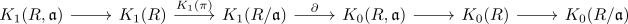
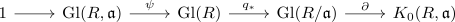
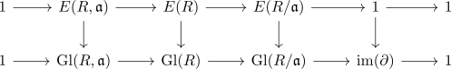
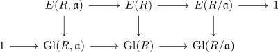
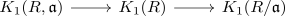
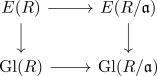
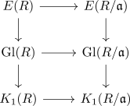
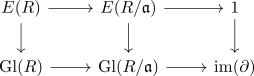

exact sequence of k0 and k1
Proposition
Let \(R\) be a ring, $\mathfrak{a} \subseteq R$ an ideal Then there exists an exact sequence

natural in ideal pairs of rings
where
- $K_1(R, \mathfrak{a})$ is the relative K1-Group
- $K_1(R)$ is K1 of a ring,
- $\partial$ is the boundary map from K1 to K0 of rings
Proof
exact sequence with $\mathrm{im}(\partial')$
We want to show that

is exact.
exact at $\mathrm{Gl}(R,\mathfrak{a})$, exact at $\mathrm{Gl}(R)$
follows from relative infinite general linear group and projection
exact at $\mathrm{Gl}(R/\mathfrak{a})$
a) $\mathrm{im}(q_*) \subseteq \mathrm{ker}(\partial)$
Suppose there exist a preimage $A \in \mathrm{Gl}_n(R)$. Then
defines an isomorphism.
Thus $[(R^n,R^n,\overline{A})] = [n]$ or
b) $\mathrm{im}(q_*) \supseteq \mathrm{ker}(\partial)$
Let $\overline{A} \in \mathrm{ker}(\partial)$. Then by equality in a grothendieck group
or after replacing $\overline{A}$ with $\overline{A} \oplus E_m$ we get an isomorphism
then by some computation we may find a preimage of $\overline{A}$ (omitted)
applying snake lemma
We have exact rows

Note that $E(-) \trianglelefteq \mathrm{Gl}(-)$ is a normal subgroup thus we may apply the snake lemma for groups and normal subgroups for

and get an exact sequence

and an induced morphism
Now consider the exact rows
where we may apply the cokernel to

first vertically and get

and then horizontally to $K_1(R) \rightarrow K_1(R/\mathfrak{a})$
or first horizontally

and then vertically to $1 \rightarrow \mathrm{im}(\partial)$
This gives us the isomorphism since colimits commute with colimits
naturality
follows from functorality of $K_1(-,-)$ & some natural transformation (omitted)